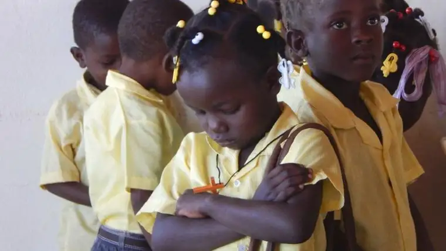

GRAFTON, N.D. — It might appear to be just another American espresso bar with a side of homemade eats and art. But Haiti’s Daily Grind in Grafton contains something of a soulful secret.
One might say the little coffee shop on the prairie has experienced a spiritual conversion of global proportions.
“Coffee’s been kind of a luxury (for Americans), and suddenly this luxury is providing for the basic needs of others,” says the Rev. Timothy Schroeder, new owner and brainchild of a project linking coffee drinkers here with poverty a world away.
Though coffee ground at Haiti’s Daily Grind will still benefit sleepy North Dakotans looking for a java jumpstart, now it also will bring relief to suffering people in Haiti.
Specifically, proceeds will go toward building an earthen-block school in Savanette Cabral in the Central Plateau region of Haiti. Machinery and technology will be left so the people can continue to build on their own.

God willing, future Haiti’s Daily Grind proceeds will provide ongoing support for teacher’s salaries, building maintenance and administration of the school, he says.
“It’s hope and help to get them out of the ‘daily grind’ of poverty,” Schroeder says.
He says inspiration came from his friend the Rev. Jack Davis, founder of the similarly collaborative project, Friends of Chimbote, which helps the poor in Peru. Davis helped him see the importance of education in lifting people out of poverty.
But the project really started percolating in the 1990s when St. John the Evangelist Catholic Church, where Schroeder is now pastor, entered into a “twinning parish” relationship with a parish in Haiti. For years, St. John’s sent money to the suffering church there, but the relationship was minimal, according to Schroeder.
When the original “twin” parish was destroyed by the 2010 earthquake, another arose. That one, St. Yves, and other nearby parishes, will be the beneficiaries of coffee consumption from the shop.
Though Schroeder closed only last month on the building that was formerly just The Daily Grind, he says he’s heartened by the conversations already happening as people sip their flavored drinks.
“They’re having talks about poverty,” he says. “North Dakota can be pretty conservative, and some are set on this idea that if you’re poor, it’s your own fault.”
But having visited Haiti several times and studying its history, he says, he’s become aware of the mechanisms that have helped keep the people oppressed. Rather than speculate about fault, he wants to make a difference.
Schroeder feels this new endeavor — which came together in a matter of months after serious prayer — was affirmed recently when Pope Francis called for the people of God to be more merciful and specifically consider creating “structural works of mercy.”
But as a busy pastor, Schroeder knew he couldn’t do it without help. So he called on parishioner Brigita Bovaird to manage the coffee shop.

The California native spent many previous summers serving up scrumptious meals to hungry crews on fishing vessels in Alaska. Now, North Dakotans looking for a tasty lunch can enjoy her skills, while helping the hungry in Haiti.
Schroeder says Bovaird has made a pledge of poverty, and promised the next six years of her life to fulfill the shop’s mission.
“A lot of the things I’ve done in my life, people tell me I’m crazy, but it works in the end,” Bovaird says. “This story is another example of my unshakeable faith and stepping out in faith.”
A relatively new Catholic, Bovaird credits Schroeder with her conversion, and his inviting her on mission to Haiti with inciting her passion for the people there.
“We went to a church on the top of a mountain, and these people, they’re so poor,” she says. “Their clothes are clean and ironed but missing buttons. There’s not enough food to eat but they’re singing joyful songs at Mass, celebrating with this excitement we don’t typically see here.”
Due to space issues, she says, the schools and chapels were combined in the same building. “So when you go to Mass, you’re sitting on school desks.”
She’s still haunted by a visit to one of Mother Teresa’s homes for orphans there. A child in grave condition was brought in, and the religious sisters were tasked with saving his life.
“He was so emaciated, and I will forever have it in my head, this dehydrated, starved child,” she recalls. “He stopped breathing while we were standing there. It’s just hard to describe.”
Bovaird, who once aspired to be a teacher, is fulfilling that call now in a sense. “I want those children to have opportunities like our children do,” she says. “I want those mothers to be able to feed their babies, to see them go to school — things we often take for granted.”
Megan Osowski, a recent graduate of Grafton High School, joined Bovaird and other parishioners this past January on a trip to Haiti to connect with life there.
“I was shocked at how friendly and loving and happy the people there are,” she says. “They’re living in shacks, but they are so filled with the love of Christ, and what they have is just enough; they’re at peace with that.”
Osowski says it made her reflect on how materialistic Americans can be. “It made me realize I need to stop striving for something more, something more, and take a step back and be more appreciative of what I have.”
But it was the boy she met the last day of her trip that has remained with her most of all, even if just in her heart.
“He had no shoes, his shirt was all dirty and had holes, but he was so happy to see us there,” Osowski says. “He had the biggest brown eyes, and he stared at me the entire Mass. Sometimes he’d be all blushed-face and turn away … it was the sweetest thing.”
A self-described “coffee addict,” Osowski says she loves the idea that her coffee-drinking can now help children like him.
“I think it’s really cool that we have the idea that we want to continuously give to Haiti, and to tie Haiti back to our community,” she says. “It’s also amazing to see it take off so fast. We’re a little town, but I was surprised to see how well everybody has responded to it.”
Bovaird says she loves seeing people of different faith traditions and cultures coming together — from the “Lutheran Ladies” who come for coffee and contribute to the Latino population bringing their gorditas to sell to help Haiti.
“People’s basic nature is wanting to help,” she says, “and if you can do that while you’re having a piece of pie with ice cream, it doesn’t get much better than that.”
If you go
What: Open house with the Rev. Wilfranc Servil from St. Yves parish in Haiti
When: 9 a.m. to 1 p.m. Tuesday, Aug. 2
Where: Haiti’s Daily Grind coffee shop, 24 E. 5th St., Grafton, N.D.
[For the sake of having a repository for my newspaper columns and articles, I reprint them here, with permission, a week after their run date. The preceding ran in The Forum newspaper on July 9, 2016.]